Литература
Романы на русском, испанском, итальянском и английском: любовь, тайна, городское фэнтези и приключение.
Универсальный автор в России
Писатель, музыкант, преподаватель языков и художник. Я создаю истории, музыку, образы и учебные материалы, где разные культуры становятся одним живым пространством.
Романы на русском, испанском, итальянском и английском: любовь, тайна, городское фэнтези и приключение.
Инструментальные композиции, песни и звуковые миры, связанные с романами и личной атмосферой автора.
Испанский, итальянский, португальский, английский и русский через тексты, диалоги, персонажей и культуру.
Обложки, персонажи, визуальные сцены и учебные изображения для художественных и языковых проектов.
Обо мне
Меня зовут Луис Роберто Фадер. Я родился в Аргентине, много лет связан с искусством, музыкой, литературой и преподаванием языков. Моя творческая биография строится вокруг нескольких направлений: я пишу романы, сочиняю музыку, создаю иллюстрации и разрабатываю учебные материалы.
В России мои художественные тексты чаще выходят под именем Роберт Фадер. Музыку я публикую как Luis Fader. В книгах на испанском, итальянском и английском имя может встречаться как Luis Fader, Luis Roberto Fader или Roberto Fader.
Этот сайт объединяет все направления в одну карту: книги, музыку, языки, рисунок и миры, где романтика соседствует с мистикой, приключением и философией.
Не просто визитка, а личная творческая вселенная: читатель может открыть роман, ученик — найти курс, слушатель — перейти к музыке, а поклонник визуального искусства — увидеть обложки и персонажей.
Романы на русском
Обложки и краткие описания для продвижения русскоязычной линии автора. Каждая карточка ведёт на страницу книги на литературной платформе: Литгороде или ЛитРес.
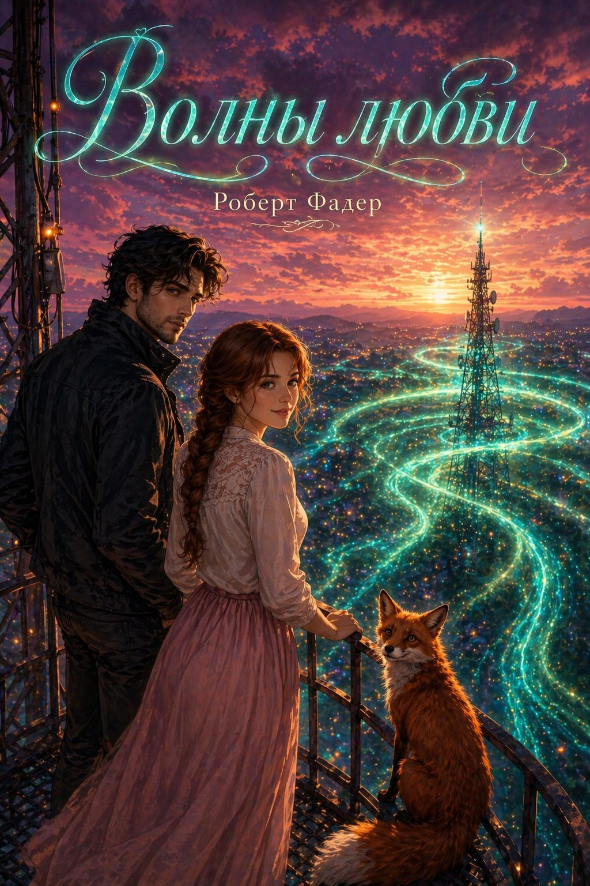
Роберт Фадер · городское фэнтези
История о встрече, которая меняет реальность. В городе Синея оживает рисунок лиса, а чувство становится силой, способной противостоять тьме.
Читать на ЛитгородеРоберт Фадер · продолжение
Новая глава мира, где любовь, музыка и свет сталкиваются с тенями прошлого. Крепость становится символом испытания и защиты.
Читать на Литгороде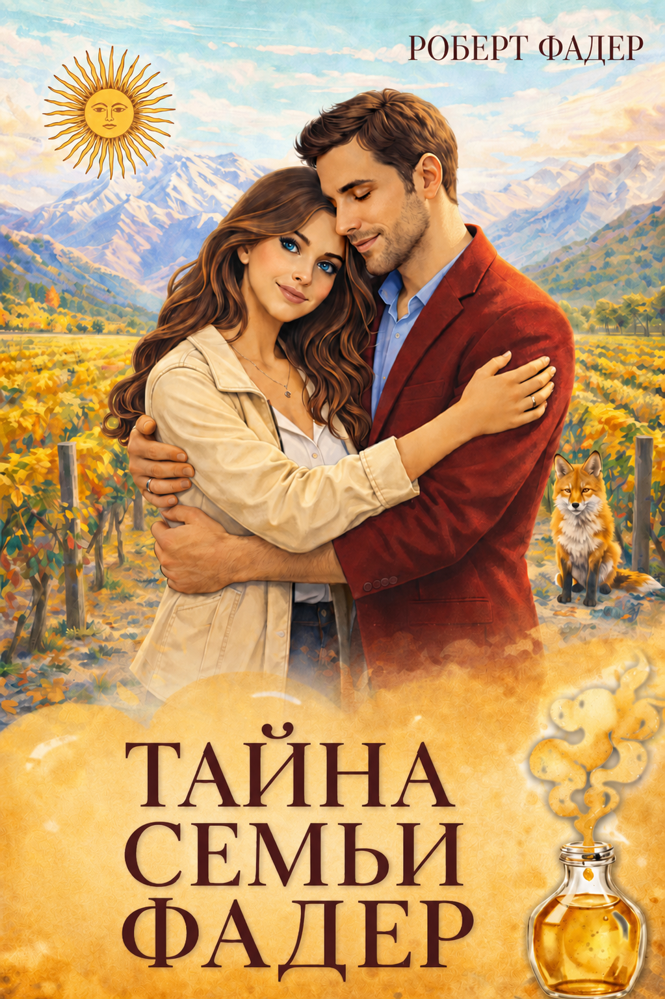
Роберт Фадер · мистика · приключение
Мендоса, виноградники, семейная загадка и старинный чемодан. Романтическое путешествие превращается в охоту за тайной рода Фадер.
Читать на Литгороде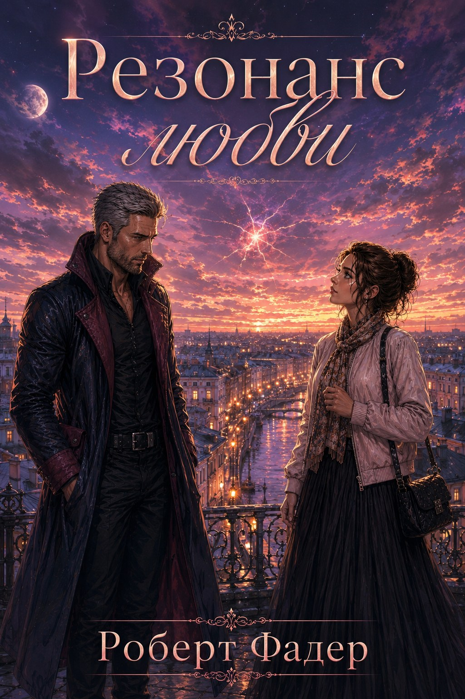
Роберт Фадер · романтическая мистика
Санкт-Петербург окутывает странная магия. Городские легенды оживают, а любовь становится резонансом, который меняет законы привычного мира.
Читать на ЛитгородеРоберт Фадер · Венеция · тайны
Венеция скрывает под водами древний секрет. Маска с огромной силой втягивает героев в охоту, где легенда становится опасной реальностью.
Читать на ЛитгородеРоберт Фадер · славянское фэнтези
Белград, древние силы, заговоры и встреча, которая превращает личную историю в борьбу за город и за самих себя.
Читать на ЛитгородеРоберт Фадер · детектив · мистика
Синея окутана туманом и тревожной тишиной. По ночам здесь появляется поезд без маршрута, а исчезновение Алисии заставляет детектива Марка войти в пространство вины, тайны и любви.
Читать на ЛитгородеРоберт Фадер · северная романтика · музыка
Таинственная мелодия ведёт героев к северу, где музыка, холодный свет и чувство соединяют судьбы сильнее расстояния.
Читать на Литгороде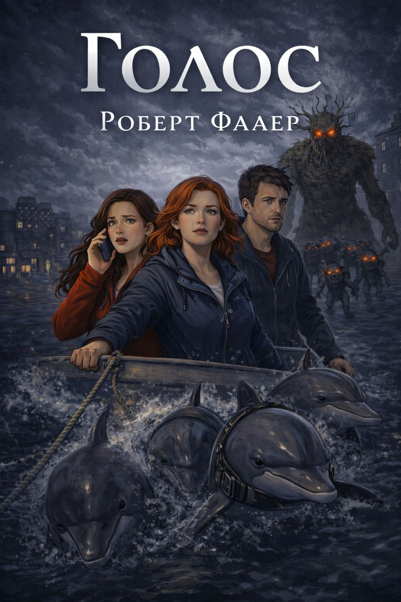
Роберт Фадер · городское фэнтези · магический детектив
Любовь, тайны, легенды и дельфины сплетаются в мистическую историю, где голос становится ключом к скрытой правде.
Читать на ЛитгородеРоберт Фадер · фантастика · любовная мистика
Когда с неба падает звезда, тихая жизнь Лауры меняется. Древняя тайна, опасное притяжение и выбор между страхом и любовью открывают дверь в иной мир.
Читать на Литгороде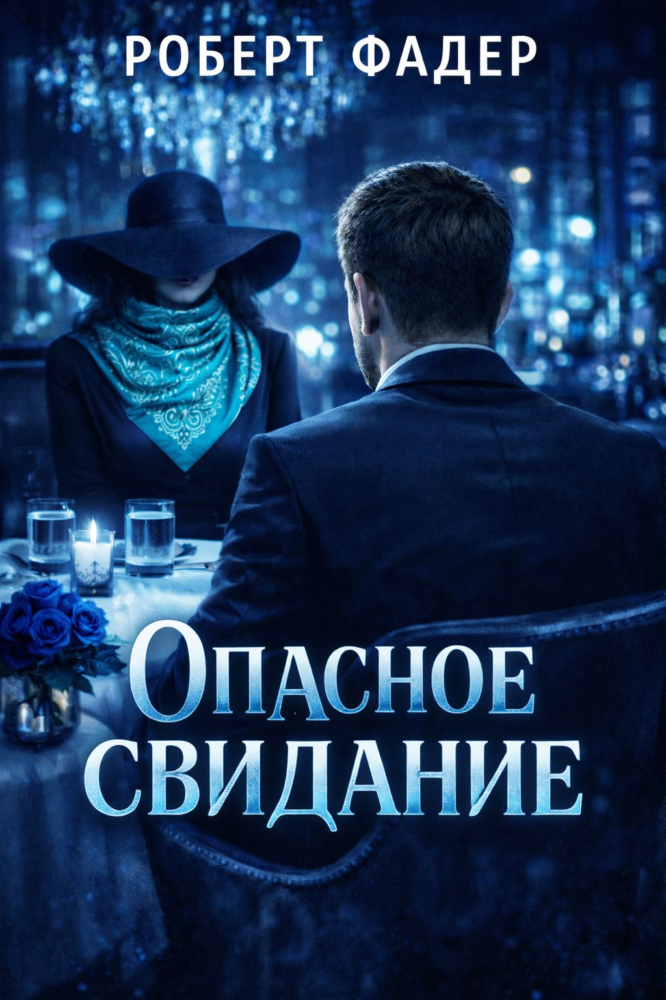
Роберт Фадер · детектив · мистика
Детектив Василий получает странное задание: найти таинственную воровку, у которой нет ни имени, ни лица. След ведёт его к череде рискованных свиданий, где каждая встреча может оказаться ловушкой.
Читать на Литгороде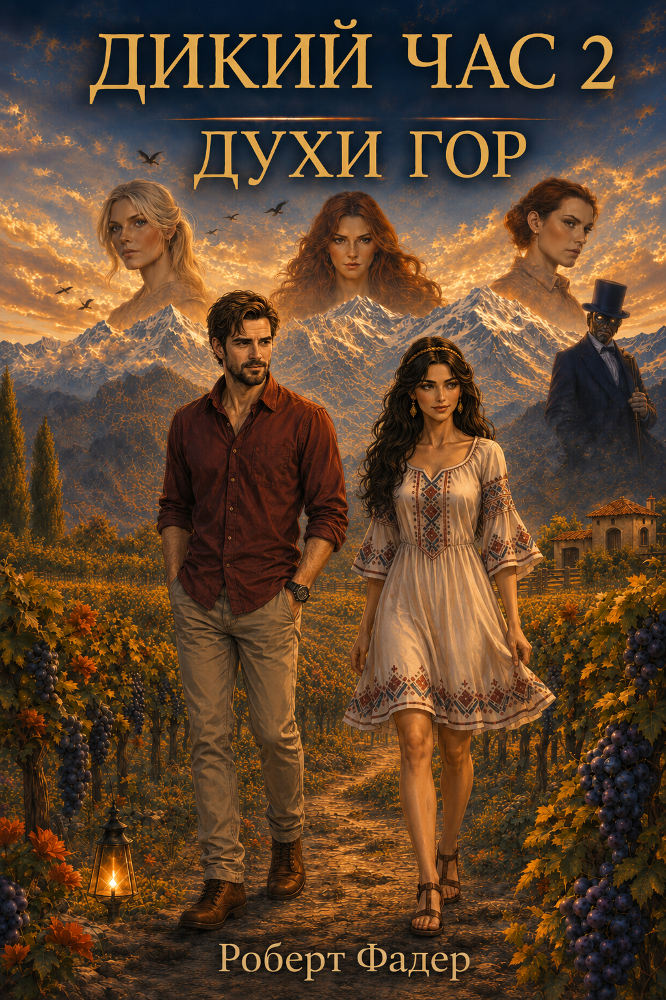
Роберт Фадер · цикл «Дикий час» · фэнтези
Луис и Наташа приезжают в Мендосу, где реальность уже дала трещину. Виноградники, Анды и древние ритуалы становятся частью истории, в которой пробуждаются духи гор.
Читать на Литгороде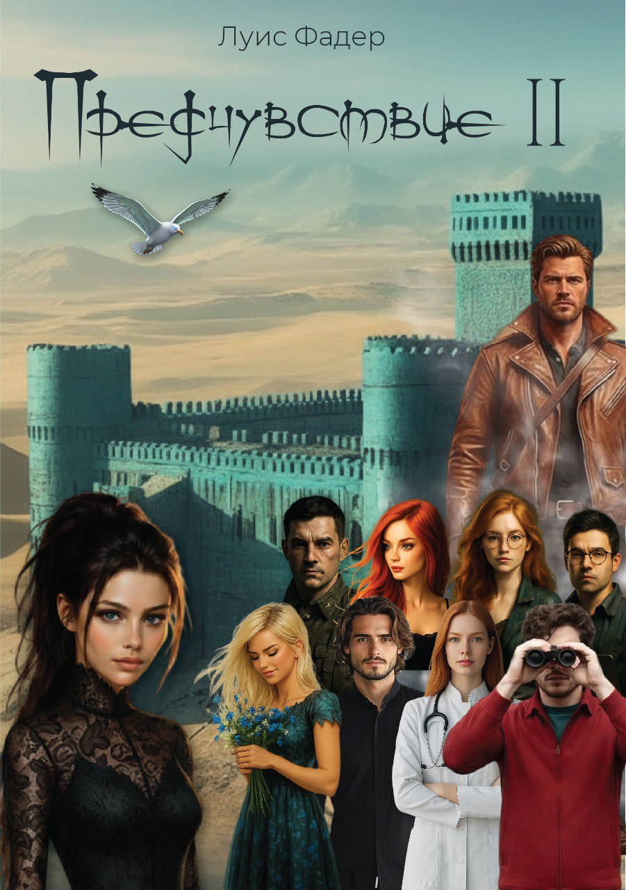
Луис Фадер · приключение · авторский сайт
Продолжение приключенческой линии, где путь героя снова проходит через тревожные знаки, внутренний сигнал и столкновение с тайной. История доступна в авторском онлайн-формате.
Читать онлайн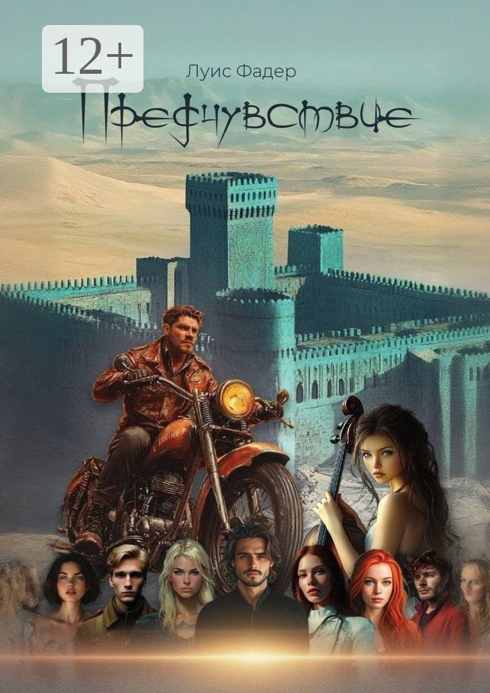
Луис Фадер · приключение · ЛитРес
История о дороге, опасности и внутреннем сигнале, который ведёт героя туда, где случайность перестаёт быть случайностью. Русскоязычное издание доступно на ЛитРес.
Читать на ЛитРесТворческие миры
Дорога, скорость, южные пейзажи и герой, который движется туда, где начинается история.
Итальянская линия: интимная романтика, рисунок, воспоминание и чувство, которое не требует громких слов.
Ver videoclips del autor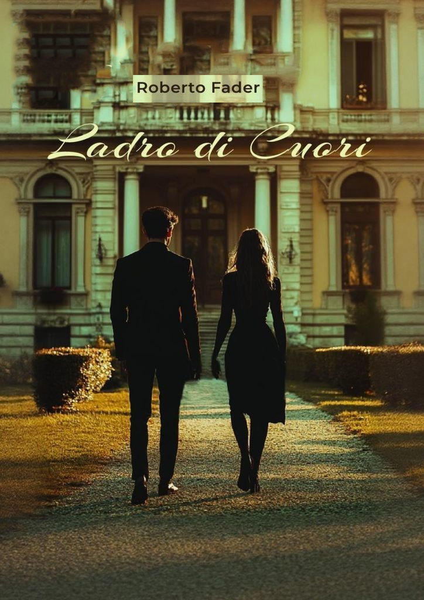
Книги и образы на итальянском, испанском и английском — отдельный мост между культурами.
Музыка
Музыка — вторая драматургия моих историй. Иногда она рождается как самостоятельный альбом, иногда — как эмоциональная тень романа, саундтрек к сцене или мелодия персонажа.
На сайте музыкальная линия может развиваться как отдельная витрина: альбомы, песни, инструментальные композиции, музыка к романам и ссылки на платформы.
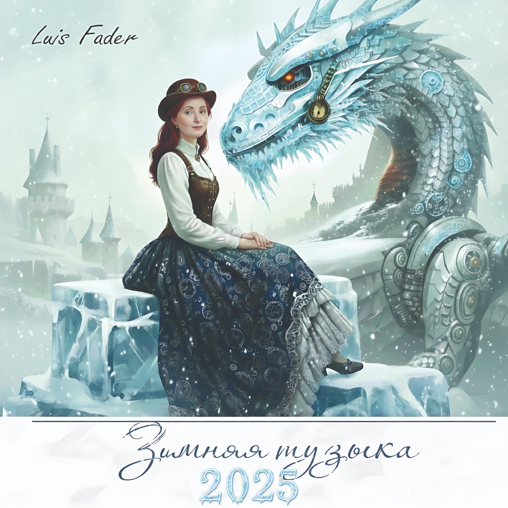
Лирическая, холодная и сказочная атмосфера для музыкальной витрины автора.
Ночная романтика, космическая нежность и мелодии, которые продолжают настроение авторских миров.
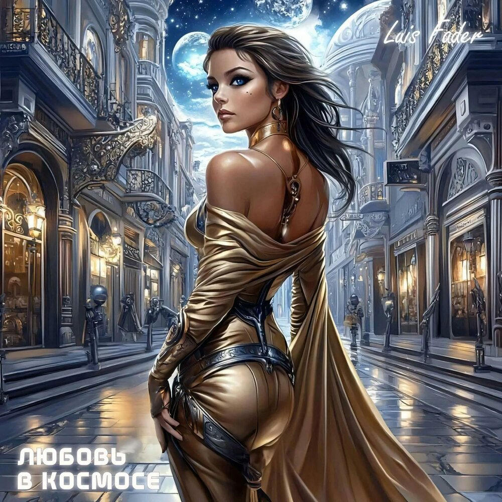
Фантастическая музыкальная линия Luis Fader: свет, город будущего и чувство за пределами Земли.
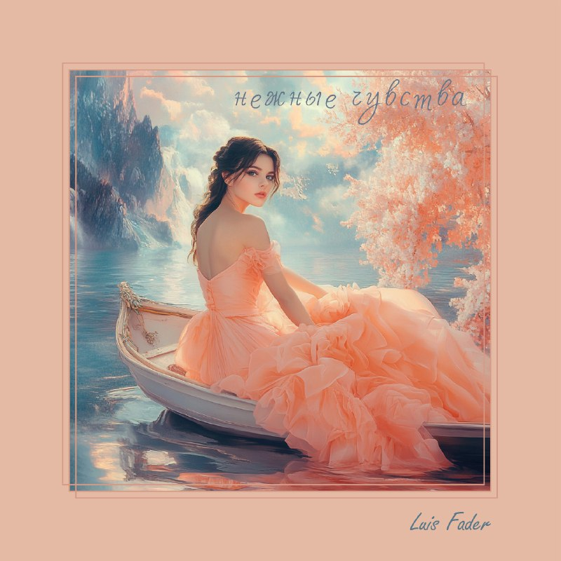
Мягкая, пастельная и романтическая музыка для отдельной витрины лирических композиций.
Преподавание
Сайт должен не только продавать уроки, но и показывать авторский метод: язык запоминается лучше, когда он связан с персонажами, диалогами, музыкой и визуальными образами.
Диалоги, грамматика, упражнения, культура Латинской Америки и Испании, тексты с переводом и словарём.
Первые диалоги, базовая грамматика, романтические и городские сюжеты, понятные объяснения на русском.
Дополнительные направления для учеников, которым интересен многоязычный подход и авторские материалы.
Арт и обложки
Иллюстрации помогают читателю войти в атмосферу книг: увидеть город, почувствовать цвет истории, запомнить героя и связать текст с музыкой.
Контакт
Здесь можно разместить форму, Telegram, ссылки на литературные платформы, музыкальные сервисы и страницы с книгами. Сейчас в шаблон включены основные кнопки для продвижения.